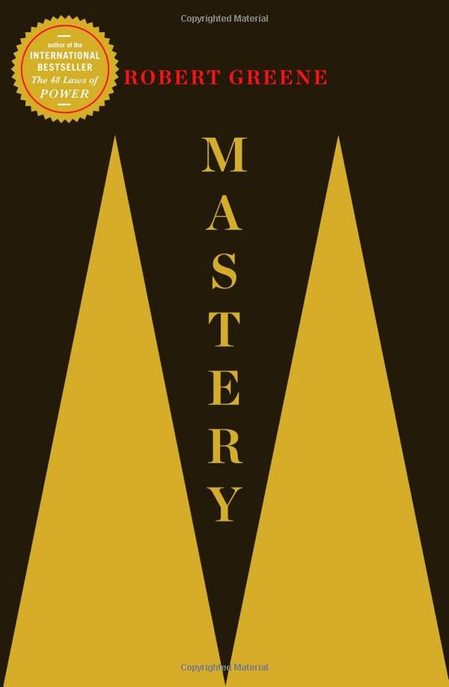
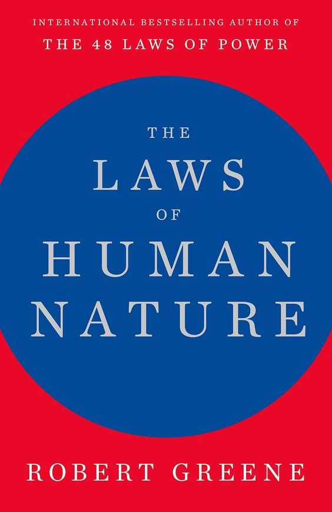
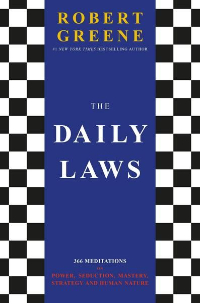

Mastery

Each one of us has within us the potential to be a Master. Learn the
secrets of the field you have chosen, submit to a rigorous
apprenticeship, absorb the hidden knowledge possessed by those with
years of experience, surge past competitors to surpass them in
brilliance, and explode established patterns from within. Study the
behaviors of Albert Einstein, Charles Darwin, Leonardo da Vinci and
the nine contemporary Masters interviewed for this book.
The Laws of Human Nature

We are social animals. Our very lives depend on our relationships with
people. Knowing why people do what they do is the most important tool
we can possess, without which our other talents can only take us so
far. Drawing from the ideas and examples of Pericles, Queen Elizabeth
I, Martin Luther King Jr, and many others, Greene teaches us how to
detach ourselves from our own emotions and master self-control, how to
develop the empathy that leads to insight, how to look behind people's
masks, and how to resist conformity to develop your singular sense of
purpose. Whether at work, in relationships, or in shaping the world
around you, The Laws of Human Nature offers brilliant tactics for
success, self-improvement, and self-defense.
The 48 Laws of Power
Amoral, cunning, ruthless, and instructive, this piercing work distils
three thousand years of the history of power into forty-eight
well-explicated laws. As attention-grabbing in its design as it is in
its content, this bold volume outlines the laws of power in their
unvarnished essence, synthesizing the philosophies of Machiavelli,
Sun-tzu, Carl von Clausewitz, and other great thinkers. Some laws
require prudence ("Law 1: Never Outshine the Master"), some stealth
("Law 3: Conceal Your Intentions"), and some the total absence of
mercy ("Law 15: Crush Your Enemy Totally"), but like it or not, all
have applications in real-life situation. ations. Illustrated through
the tactics of Queen Elizabeth I, Henry Kissenger, P T Barnum, and
other famous figures who have wielded - or been victimised by - power,
these laws will fascinate any reader interested in gaining, observing
or defending against ultimate control.
The 33 Strategies of War
Spanning world civilisations, and synthesising dozens of political,
philosophical, and religious texts, The 33 Strategies of War is a
comprehensive guide to the subtle social game of everyday life. Based
on profound, timeless lessons, it is abundantly illustrated with
examples of the genius and folly of everyone from Napoleon to Margaret
Thatcher and Hannibal to Ulysses S. Grant, as well as diplomats,
captains of industry and Samurai swordsmen.
The Art of Seduction
When raised to the level of art, seduction, an indirect and subtle
form of power, has toppled empires, won elections and enslaved great
minds. Immerse yourself in the twenty-four maneuvers and strategies of
the seductive process, the ritual by which a seducer gains mastery
over his target. Understand how to "Poeticize Your Presence," “Keep
them in Suspense – What Comes Next” and “Master the Art of the Bold
Move”. Every bit as essential as The 48 Laws of Power, The Art of
Seduction is an indispensable primer of persuasion that reveals one of
history's greatest weapons and the ultimate form of power.
The 50th Law
In The 50th Law, hip hop and pop culture icon 50 Cent (aka Curtis
Jackson) joins forces with Robert Greene, bestselling author of The 48
Laws of Power, to write a “bible” for success in life and work based
on a single principle: fear nothing. With stories from 50 Cent's life
on the streets and in the boardroom as he rose to fame after the
release of his album Get Rich or Die Tryin’, as well as examples of
others who have overcome adversity through understanding and
practicing the 50th Law, this deeply inspirational book is perfect for
entrepreneurs as well as anyone interested in the extraordinary life
of Curtis Jackson.
The Daily Laws

The Daily Laws offers a page of refined and concise wisdom for each
day of the year, in an easy-to-digest lesson that will only take a few
minutes to absorb. Each day features a Daily Law as well—a
prescription that readers cannot afford to ignore in the battle of
life. Each month centers around a major theme: power, seduction,
persuasion, strategy, human nature, toxic people, self-control,
mastery, psychology, leadership, adversity, or creativity. Who doesn’t
want to be more powerful? More in control? The best at what they do?
The secret: Read this book every day. “Daily study,” Leo Tolstoy wrote
in 1884, is “necessary for all people.” More than just an introduction
for new fans, this book is a Rosetta stone for internalizing the many
lessons that fill Greene’s books and will reward a lifetime of reading
and rereading.